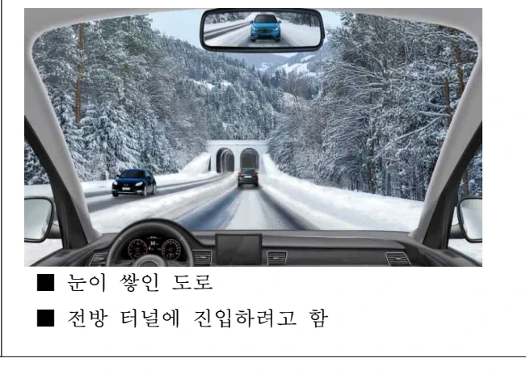

820. 다음 상황에서 가장 안전한 운전방법 2가지는?

- ①차간 거리를 평소보다 충분히 확보한다.
- ②터널 진입 전 브레이크를 아주 강하게 밟아 속도를 미리 줄인다.
- ③터널 안은 눈이 쌓이지 않았기 때문에 가속 운행한다.
- ④눈길은 매우 미끄럽기 때문에 앞차의 바퀴자국을 따라 주행한다.
- ⑤미끄럼 방지를 위해 기어를 중립으로 변경하여 진행한다.
정답 보기
정답
① 차간 거리를 평소보다 충분히 확보한다.
④ 눈길은 매우 미끄럽기 때문에 앞차의 바퀴자국을 따라 주행한다.
근거·해설
눈길 안전운행을 위해서는 급제동, 급가속, 급핸들 조작을 삼가고 충분한 안전거리를 확보해야 한다. 또한 미끄러 짐 방지를 위해 앞차의 바퀴자국을 따라 운행하는 것이 바람직하며 가급적 저단기어를 사용한다. 특히 터널 진출입 구를 비롯한 터널 구간은 결빙 가능성이 높기 때문에 감속 운행해야 한다.